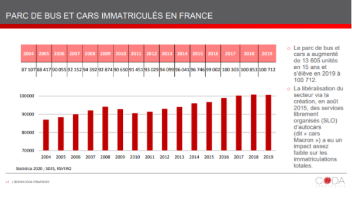

Sur une période de 15 ans, on peut remarquer une augmentation forte du nombre de parcs de bus (Parkings P+R), plus de 13 605 unités. Le nombre de parcs s’élèvent donc à 100712 unités en 2019.
Sur une période de 15 ans, on peut remarquer une augmentation forte du nombre de parcs de bus (Parkings P+R), plus de 13 605 unités. Le nombre de parcs s’élèvent donc à 100712 unités en 2019.
Grâce à ces informations on peut déduire que de plus en plus d’individus choisissent de prendre le bus, d’où la création de parcs à bus.
